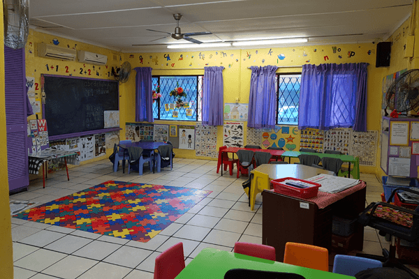
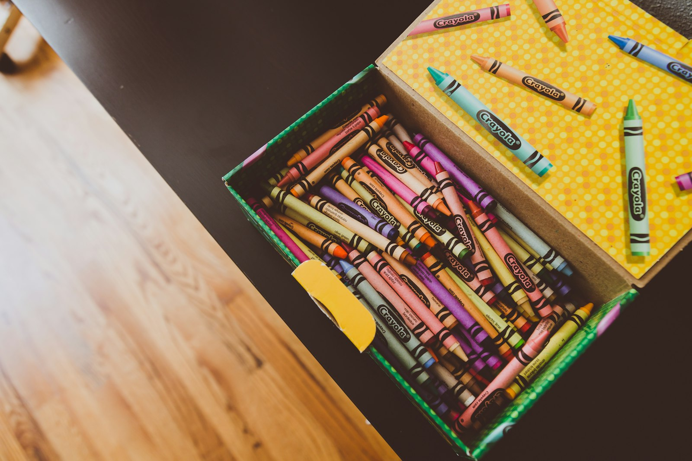
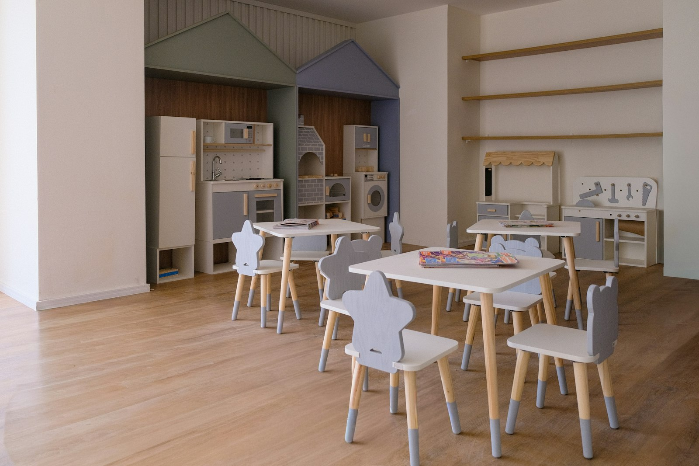

Preschool & Aftercare · Caversham Glen, Pinetown
Now in its third year in Caversham Glen, Zalo cares for toddlers and preschoolers with a calm, familiar routine — and keeps looking after them through aftercare once they're at "big school".

about
Zalo Preschool and Aftercare is a small early-learning setting on Celtis Rd in Caversham Glen, Pinetown — now in its third year of looking after local toddlers and preschoolers, with an aftercare programme for children already at primary school. There's no call centre here: enquiries go straight to WhatsApp or a real inbox, and a 4.8★ Google rating from 51 reviews says local parents notice the difference.
Zalo has spent its third year building a track record with Caversham Glen families — reflected in a 4.8★ rating across 51 Google reviews.
Programmes that grow with your child — from settling in as a toddler, through preschool, into Grade-R readiness — plus aftercare once they're at primary school.
Enquiries go straight to WhatsApp or a real inbox — no automated queues, just the people who'll actually be looking after your child.
our work
A glimpse of the classroom and play spaces your child would spend their day in — no faces, just the rooms.


Real photos from Zalo's own classroom, shown alongside a little representative styling imagery — full gallery to follow from the business.
programmes
your child's day
Every day follows a familiar rhythm — the same general shape, whatever your child's age. Exact timings are confirmed directly with the Zalo team.
A settled start — free play while the day's group comes together.
Songs, stories and the kind of structured group time that builds early social skills.
Age-appropriate activities — from toddler sensory play through Grade-R readiness work.
Time to run, climb and play outside — a regular part of every day.
A break to eat and rest, paced to suit younger children.
School-going children join the aftercare group until collected.
Supervision, sign-in/sign-out routines and day-to-day safety are part of how Zalo runs day to day — the specifics (staffing, registration, policies) are best confirmed directly with the team. WhatsApp us with any question before you enrol; there's no such thing as a silly one.
journal
Practical, parent-tested notes on preschool life in Caversham Glen and Pinetown — readiness, routines and the small stuff that makes the biggest difference.
The everyday signs that tend to matter more than knowing the alphabet.
What to expect in the first two weeks — and how to make goodbyes easier.
The shape a solid aftercare programme should follow, from pickup to home-time.
visit & enrol